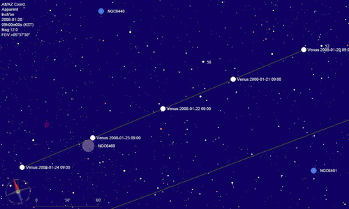

Data i hora
Podeu obtenir aquesta caixa de diàleg des del menú Configuració → Data/hora.
O també fent clic a la icona  en la barra esquerra, o per Configuració → Totes les opcions de configuració → Data/Hora.
en la barra esquerra, o per Configuració → Totes les opcions de configuració → Data/Hora.
La configuració de “Data i hora” té dues pestanyes:
Per a una correcta presentació del vostre mapa, assegureu-vos també que teniu ben configurada la posició d'observació.
Data/Hora

Amb aquesta caixa de diàleg podeu indicar a Cartes del Cel la data i hora a utilitzar. Per mostrar un mapa fiable, Cartes del Cel necessita fer molts càlculs que requereixen el temps com a paràmetre. La configuració correcta del dia i l'hora és molt important per mostrar una posició precisa dels planetes, cometes i asteroides. La data i l'hora també són essencials per representar bé un mapa quan useu les coordenades altazimutals, o quan voleu comprovar la visibilitat d'un objecte en la finestra d'informació detallada o el comportament respecte del vostre horitzó local.
Podrieu voler també que es mostri el moviment propi d'estels al llarg de molts anys.
La casella usa l'hora del sistema
Activant aquesta casella, Cartes del Cel copiarà l'hora del sistema en el moment que la marqueu, i cada vegada que obriu un mapa usarà aquesta hora per calcular-lo. És una selecció convenient per obtenir mapes del cel a l'hora actual.
Indicar la data i l'hora manualment
Si heu seleccionat “Usa l'hora del sistema” : Si l'opció “Refresca cada…” ha estat seleccionada, la pantalla s'actualitzarà d'acord amb l'interval en segons que hagueu decidit. Altrament, l'hora per defecte serà la d'engegar el programa i es mantindrà durant tota la sessió, si no és que manualment cliqueu sobre el quadradet “Ara” de la barra principal.
Us cal desseleccionar la casella Usa l'hora del sistema i llavors
podreu entrar manualment qualsevol data i hora vàlids des de l'any -20000 fins a l'any +20000. No obstant, els planetes només estan calculats per als anys des del -3000 fins al +3000. Atenció als anys negatius: 1BC és l'any 0 i 2BC és l'any -1. Noteu que el temps definit és l'hora oficial de l'observatori actual i el TU dependrà de la corresponent zona horària.
Podeu també entrar el dia julià (DJ) usant l'àrea d'entrada i la caixa de diàleg del calendari DJ.
Botons d'hora fixa
Un cop desactivada la casella “Usa l'hora del sistema” esdevenen operatives les tres opcions següents:
Hora del sistema: L'hora del sistema en el moment precís que feu clic a aquest botó serà copiada al programa com si l'haguéssiu introduït manualment. El mapa actiu serà recalculat per aquesta hora. A partir d'ara, tota nova carta oberta també usarà aquesta hora fixada amb el clic.
00h: Al moment que feu clic a aquest botó l'hora usada per Cartes del Cel serà 00:00:00 del vostre horari oficial. La data romandrà intocada. El mapa actiu serà recalculat per a aquesta hora que també prendran tots els mapes que obriu a partir d'aquest moment.
00h UT: Quan feu clic a aquest botó, l'hora del programa serà 00:00:00 TU (Temps universal). La data romandrà invariable. La carta activa es recalcularà per aquesta hora i tot mapa obert de nou també l'usarà.
La casella Refresca cada...
Si voleu que Cartes del Cel mantingui actualitzat el mapa amb el pas real del temps a partir de l'hora que hagueu fixat (la del sistema o qualsevol altra) heu de marcar aquesta casella i també establir el valor de l'interval en segons que desitgeu per refrescar els mapes. Recordeu que refrescar els mapes dóna feina al processador. L'autorefrescat descrit té sentit si useu les coordenades altazimutals, encara que també pot ser útil si observeu ocultacions, asteroides o cometes, independentment del sistema de coordenades usat.
Fent clic a la casella Més opcions us obre la possibilitat de canviar la diferència usada pel programa entre el Temps Dinàmic (TD) i el Temps Universal (TU). Cal indicar el valor correcte si voleu obtenir dades acurades en estudiar ocultacions. Feu clic aquí si voleu llegir més sobre els estàndards del temps.
Simulació
 Cartes del Cel pot mostrar el moviment dels objectes del sistema solar (Sol, planetes, llunes, asteroides i cometes) per un període de temps en un sol mapa. La part de l'òrbita que aquests objectes recorren durant aquest període pot ser mostrada amb una línia i les posicions a intervals definits.
Cartes del Cel pot mostrar el moviment dels objectes del sistema solar (Sol, planetes, llunes, asteroides i cometes) per un període de temps en un sol mapa. La part de l'òrbita que aquests objectes recorren durant aquest període pot ser mostrada amb una línia i les posicions a intervals definits.
Es defineix el període total indicant els valors en les caselles Nombre de passos, cada (que pot ser llegit com interval o mida del pas) i triant la unitat en el grup de botons. Per exemple, si poseu Nombre de passos a 10, i cada a 7 i unitat a dia, veureu en el mapa el moviment dels objectes triats del sistema solar durant les properes deu setmanes a partir de l'hora i data inicials que tingueu configurades.
Podeu triar en la finestra els objectes que han de seguir la simulació, si voleu línies d'enllaç o no i si voleu o no etiquetes amb la freqüència i contingut que desitgeu per a les posicions.

{kind=link}
La configuració del dia i l'hora està relacionada amb:
Sistema de coordenades. Quan voleu veure què és visible sobre el vostre horitzó local a una certa hora i voleu fer una simulació de temps, el sistema de coordenades ha de ser l'altazimutal. Hi ha diverses maneres d'aconseguir-ho. Per exemple, des del menú: Carta → Sistema de coordenades → Sistema_de_coordenades
Sistema solar És possible que desitgeu simular el moviment de planetes, asteroides o cometes en qualsevol sistema de coordenades. Primerament us cal que es puguin mostrar, i per això també disposeu de diverses maneres. Des del menú: Carta → Mostra els objectes i marqueu “Mostra els planetes”, “Mostra els asteroides” i “Mostra els cometes”. O la forma més ràpida, fent clic en les icones apropiades de la barra d'objectes en grup d'objectes B.